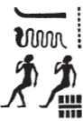
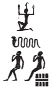
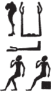
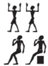
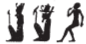

Column 6 (239-246)
Esna 239
- Location: Column 6
- Date: Probably Trajan
-
Hieroglyphic Text
- Bibliography: None. See LGG references in Tempeltexte 2.0
Answ.t-bỉty
ỉwn ḥr-ỉb ȝḫ.t
nb ḥḥ.w qmȝ ḥfn.w
ỉr ḥp.t=f
m ḥḥ n ḥḥ.w
swḥ n ḫsbḏ
nḥm qnw
sḫp(r) wȝḏwȝḏ
<qmȝ> ỉnm.w
ỉt-ỉt.w(?) n pȝwty tpy
wtṯ nfy nḥp nn
qmȝ nḫb
m ḥr-ỉb Nwnw
ỉr Rʿ m qȝy qȝ
ẖnmw-Rʿ nb tȝ-sn.t
nb sḫ.t
ḥqȝ ʿȝ ḥn.t
ỉty m rȝ-ḥȝ.wt
A The King of Upper and Lower Egypt,
Iun-pillar within the Akhet,
Lord of millions, who created myriads;
who set his limits
as millions of millions.
Wind of lapis-lazuli;
he who rescues the desert area,108
who produces verdure,
and <creates> colors.
Father of fathers of the First Primeval,109
who begat this, and fashioned that;
he who created the lotus
in the middle of Nun,
and made Re in the high mound:
Khnum-Re Lord of Esna,
Lord of the Field,
Great Chief of the canal,110
Sovereign in the river mouths.
Bnsw.t-bỉty
Nw.t bẖ.t n Rʿ
ỉr.t-Rʿ
ḥr.t tp n zȝ=s
dgȝ ḥr.w-nb.w
nḏ.t n Ḥr-ȝḫty
šps.t wsr.t
ršw Rʿ n mȝȝ=s
nb(.t) wpy
šȝʿ.tw n=s nhm
nb(.t) tḫ
ʿšȝ ḥb.w
nn wrš ỉhȝy m wbȝw=s
ršw ṯḥḥ m ḥr=s nfr
Nb.t-ww nb(.t) tȝ-sn.t
nb(.t) ỉbȝ
B The King of Upper and Lower Egypt,
Nut, who gave birth to Re,
the Eye of Re
upon the head of her son,
whom all faces behold.
Protector of Harakhty,
the august and mighty one,
Re rejoices from seeing her;111
Lady of festival,
for whom jubilation was begun,
numerous of festivals:
there is no drought of cheers in her forecourt,
celebration and rejoicing are in her good face:
Nebtu, Lady of Esna,
Lady of the Dance.
Esna 240
- Location: Column 6
- Date: Trajan
- Hieroglyphic Text
Cartouches of Trajan, Khnum, Neith, Menhyt, Nebtu, and Heka. Multiple unique spellings.
Heka’s names are spelled as follows:
2 
4 
9 
11 
Esna 241
- Location: Column 6
- Date: Trajan
-
Hieroglyphic Text
- Bibliography: Sauneron 1982, pp. 27-31; see also Tempeltexte 2.0
This hymn is a continuation of Esna 234.
6 bis1n Nb.t-ww
nb(.t) ḥw.t-N.t
wr ỉdb
1 For Nebtu,
Lady of the Temple of Neith,
great of cultivated areas.
n Nb.t-ww
nb(.t) Pr-ẖnmw
ḥnw.t sḫ.t
For Nebtu,
Lady of Per-Khnum,
mistress of the field.
n Nb.t-ww
nb(.t) Pr-nṯr
ḥqȝ(.t) ȝḫ.t
For Nebtu,
Lady of Per-Netjer,
ruler of the field.
n Nb.t-ww
nb(.t) ʿḥ
ḥnw.t sm.w
For Nebtu
Lady of the palace,
mistress of vegetables.
n Nb.t-ww
nb(.t) ʿbȝ
ḥnw.t ỉḫt nb.w
For Nebtu
Lady of Aba,
mistress of all things.
n Nb.t-ww
Ỉs.t wr.t
mw.t-nṯr
nb(.t) ḥw.t-bȝ.w
For Nebtu,
great Isis,
mother of God,
Lady of Temple of the Bas.
n Nb.t-ww
špd.t ʿnq.t
For Nebtu,
Sothis and Anukis.
n Nb.t-ww
Rʿ.t-tȝ.wy
For Nebtu,
Rat-tawy.
2n Nb.t-ww
Mw.t wr.t
nb(.t) Ỉšrw
For Nebtu,
Mut the great,
Lady of the Isheru.
n Nb.t-ww
Ḥw.t-ḥr ḥr(.t)-ỉb Wȝs.t
For Nebtu,
Hathor within Thebes.
n Nb.t-ww
Ṯnn.t-Ỉwny.t
For Nebtu,
Tjenenet-Iunyt.
n Nb.t-ww
sḫm.t ʿȝ.t
mr.t Ptḥ
For Nebtu,
Sakhmet the great,
beloved of Ptah.
n Nb.t-ww
ḫnty s.t=s
r nṯr.w
For Nebtu,
whose position is most advanced
of the gods.
n Nb.t-ww
ỉʿrr.t n(.t) Ptḥ
ḫnty s.t=s
r nṯr.w
For Nebtu,
uraeus of Ptah,
whose position is most advanced
of the gods.
3n Nb.t-ww
sḫm.t tp(.t) ỉn.t
3 For Nebtu,
Sakhmet atop the valley.
n Nb.t-ww
nb(.t) P ḥnw.t dp
For Nebtu,
Lady of Pe, Mistress of Dep.
n Nb.t-ww
ỉr(.t) ȝḫ.w
For Nebtu
who does wonderful things.
n Nb.t-ww
ḫnt(.t) sḫ.t
šzp(.t) ỉmy=s
For Nebtu,
foremost of the Field,
who accepts what is in it.
n Nb.t-ww
ḫnt(.t) Ṯȝ-wr m ỉȝbt.t
rdỉ(.t) ṯȝw r fnḏ
n wrḏ-ỉb
For Nebtu,
foremost of the Thinite nome in the east,112
who gives air to the nose
of Weary of Heart (Osiris).
n Nb.t-ww
nb.t mȝy.t
ḥnw.t [qȝy.t]
For Nebtu,
Lady of new lands,
mistress of [high ground].
4n Nb.t-ww
Rnn.t nfr.w
4 For Nebtu
Renenutet of good things.
n Nb.t-ww
nb(.t) kȝw
ʿšȝ ḏfȝw
For Nebtu
Lady of food,
numerous of provisions.
n Nb.t-ww
sḫp(r.t) ẖr.t
n ḥr.w nb.w
For Nebtu
who produces sustenance
for everybody.
n Nb.t-ww
ḥnw.t npr.t
nb(.t) sm.w
ḫnt.t ḫnt-tȝ
For Nebtu,
Mistress of grain,
Lady of vegetables,
foremost of Khent-ta.
n Nb.t-ww
ȝḫ.t nb(.t) ȝḫ.t
For Nebtu,
the Field, Lady of the field.
n Nb.t-ww
ẖnm(.t) ḫnty-sḫ.t=f
For Nebtu
who unites with Foremost of his Field
(Khnum).
n Nb.t-ww
ỉỉ(.t) m Ḥʿpỉ
r [bʿḥ] ȝḫ.t
For Nebtu,
who arrives as Hapi,
to [flood] the field.
5n Nb.t-ww
nb.t sm.w
ʿšȝ wȝḏwȝḏ
5 For Nebtu,
Lady of plants,
plentiful of vegetation.
n Nb.t-ww
srwḏ(.t) ḫ.t-n-ʿnḫ
For Nebtu,
who makes the wood-of-life grow.
n Nb.t-ww
ḏdȝ np(ry)
For Nebtu
she with hearty grain.
n Nb.t-ww
wnm r’ nb
(m) pr ỉm=s
For Nebtu,
every mouth eats
(of) what grows from her.
n Nb.t-ww
bwt=s ḥq(r) ỉbw
For Nebtu
who detests hunger and thirst.
n Nb.t-ww
nb(.t) wpy.w
ḥnw.t tḫ
For Nebtu,
Lady of wpy-festivals,
mistress of inebration.
n Nb.t-ww
6nb.t wrh
ḥnw.t ỉhy
For Nebtu,
6 Lady of wrh-dance,
mistress of jubilation.
n Nb.t-ww
ḥnw.t mnỉ.t sšš
For Nebtu,
mistress of the menit and sistrum.
n Nb.t-ww
ỉḥy n [kȝ]=s
For Nebtu,
for whose [Ka] one makes music.
n [Nb.t-ww]
wp.tw hbn n kȝ=s
For \[Nebtu\],
for whose Ka one opens jars.113
n Nb.t-ww
nb(.t) ỉhy
ḥqȝ(.t) ȝw(.t)-ỉb
For Nebtu,
Lady of jubilation,
ruler of happiness.
n Nb.t-ww
šps.t wsr.t
7sḥtp.t ỉb n ỉt=s Rʿ
For Nebtu,
august and mighty,
7 who pacifies her father, Re.
n Nb.t-ww
Tfn.t m s.t tn
For Nebtu,
Tefnut in this place.
n Nb.t-ww
š[ps.t…]
For Nebtu,
Au[gust ….]
[n Nb.t-ww]
ḥnw.t ḥm.wt
For Nebtu,
Mistress of women.
n Nb.t-ww
ḥnw.t pr-nsw.t
For Nebtu,
Mistress of the King’s house.
n Nb.t-ww
nb(.t) ḥzy.t
ʿȝ mrw.t
For Nebtu,
Lady of praise,
great of love.
n Nb.t-ww
spr(.t) r ḥb=s
m tȝ-sn.t
For Nebtu,
who arrives to her festival
in Esna.
n Nb.t-ww
wȝḥ nḥb.t r tȝ
8ỉn ỉmy.w tȝ
ḥr ndb=f
For Nebtu,
those on earth
in its entirety
8 throw (their) neck on the ground.
n [N]b.t-ww
sḏm(.t) spr.w
n ḥr.w-nb.w
For [Ne]btu,
who hears prays
from everybody.
n Nb.t-ww
mḥn.t ḥr tp
nṯr nb
[…]
For Nebtu,
who coils upon the head
of every god
[…]
[n Nb.t-ww]
ḥr(.t) s.t wr.t
[For Nebtu],
upon the great throne.
n Nb.t-ww
nb(.t) ʿ-ẖnwty
For Nebtu,
Lady of the audience hall.
n Nb.t-ww
nb(.t) sḫ.t
ḥnw.t ḫntš
For Nebtu,
Lady of the field,
mistress of the arbor.
n Nb.t-ww
nb.t ʿ.t n.t 9 ḫ.wt
For Nebtu,
Lady of the 9 orchard.
n Nb.t-ww
nb(.t) šn.w
srwḏ.t rwḏ nb
For Nebtu,
Lady of trees,
who makes all plants grow.
n Nb.t-ww
ỉr(.t) šnb.t n Rʿ
ẖnm(.t) ỉt=s Ỉtm
For Nebtu,
who acts as chest for Re,
who unites with her father, Atum.
n Nb.t-ww
mḥn.t m tp nb=s
ḫnd Ḥr m ḥʿʿ
For Nebtu,
who coils on the head of her lord,
so Horus travels in joy.
n Nb.t-ww
Bȝst.t nb(.t) Bȝst.t
m sḫ.t-nṯr
For Nebtu,
Bastet lady of Bubastis,
in the Field of God.
n Nb.t-ww
Ỉw=s-ʿȝ=s nb(.t) wḥʿ-tȝ
For Nebtu,
Iusaas Lady of wḥʿ-tȝ
(Heliopolis).
10n Nb.t-ww
m ḏd=s nb.w
10 For Nebtu,
in all that she says.
n Nb.t-ww
ḫnt.t Ỉwnw
wsḫ-nmt.t m skt.t
For Nebtu,
foremost of Heliopolis,
broad of steps in the night bark.
n Nb.t-ww
Mȝʿ.t m ḥȝ.t
wỉȝ n Rʿ
For Nebtu,
Maat at the prow
of the bark of Re.
n Nb.t-ww
Nẖb.t nb.t Nḫb
For Nebtu,
Nekhbet, Lady of Elkab.
n Nb.t-ww
ʿnq.t nb(.t) tȝ
For Nebtu,
Anukis, Lady of Ta (Komir).114
n Nb.t-ww
Nb.t-ḥtp.t nb(.t) tȝ.wy
For Nebtu,
Nebet-hetepet, Lady of the Two Lands.
n Nb.t-ww
Mn.t nb(.t) ỉȝbt.t
11Ḥw.t-ḥr wr.t nb(.t) ʿgny
For Nebtu,
Menet, Lady of the East,115
11 Hathor the great, Lady of ʿAgny.
n Nb.t-ww
nbw.t-ʿȝy.t
nb(.t) (ỉmy)-wȝḏ=s
For Nebtu,
the Great Gold,
Lady of (ỉmy)-wȝḏ=s.116
n Nb.t-ww
(Ỉs.t)-Ỉr.t-nfr(.t)
ʿšȝ ḥb.w
ḫnt.t ḥw.t-ȝw(.t-ỉb)
For Nebtu,
(Isis)-Ỉr.t-nfr.t
numerous of festivals,
foremost of the Temple of Happiness.117
n Nb.t-ww
Nb.t-ḥw.t ʿnq.t
m ȝ.t=s
For Nebtu,
Nephthys and Anukis
in her moment (of rage).
n Nb.t-ww
Tȝ-sn.t-nfr.t Tfn.t
For Nebtu,
Tasenetnefret, Tefnut.118
n Nb.t-ww
Spd.t nb(.t) tp-rnp.t
For Nebtu,
Sothis, Lady of the New Year.
n Nb.t-ww
ỉr.t Ḥr wr.t
For Nebtu,
great Eye of Horus.
12n Nb.t-ww
nb(.t) pr-wr
ḥnw.t pr-nsr
ḫnt.t pr-nw
12 For Nebtu,
Lady of the pr-wr,
mistress of the pr-nsr,
foremost of the pr-nw.
n Nb.t-ww
Mȝʿ.t zȝ.t Rʿ
For Nebtu,
Maat, daughter of Re.
n Nb.t-ww
Tfn.t zȝ=s ḥkȝ
For Nebtu,
Tefnut, whose son is Heka.
n Nb.t-ww
Tfn.t Rnn.t
n pr-ms
For Nebtu,
Tefnut, Renenet
of the Mammisi.
n Nb.t-ww
Ỉp.t-ḥm.t=s
ḫnt.t ȝḫ.t
For Nebtu,
Ỉp.t-ḥm.t=s,
foremost of the Akhet.
n Nb.t-ww
sḫp(r.t) zȝ=s m nsw.t
For Nebtu,
who makes her son the king.
n Nb.t-ww
sḫp(r.t) 13Ḥr m pr=f
For Nebtu,
who produces 13 Horus in his domain.
n Nb.t-ww
Sšȝ.t nb(.t) zš
For Nebtu,
Seshat, Lady of Writing.
n Nb.t-ww
Ỉs.t ḫnt.t Pr-ẖnmw
For Nebtu,
Isis, foremost of Per-Khnum.
n Nb.t-ww
Wnw.t šmʿ
For Nebtu,
Wenut of Upper Egypt.
n Nb.t-ww
Wnw.t mḥw
For Nebtu,
Wenut of Lower Egypt.
n Nb.t-ww
smsw.t wr.t
For Nebtu, great eldest one.
n Nb.t-ww
sẖkr.t nfr.t
For Nebtu,
the beautiful adorned one.
n Nb.t-ww
wȝḏ ḫỉ
r nṯr.w nṯry.t
For Nebtu,
whose child flourishes the most
of gods and goddesses.
n Nb.t-ww
N.t nb(.t) tȝ-sn.t
For Nebtu,
Neith, Lady of Esna.
14n Nb.t-ww
wsr.t r nṯr.w
14 For Nebtu,
mightiest of the gods.
n Nb.t-ww
m rn(.w)=s nb.w
For Nebtu,
in all her names.
n Nb.t-ww
m ḫprw=s nb.w
For Nebtu,
in all her manifestations.
n Nb.t-ww
m sštȝ(.w)=s nb.w
For Nebtu,
in all her mysterious forms.
n Nb.t-ww
m s(.w)t=s nb(.w)
For Nebtu,
in all her thrones.
n Nb.t-ww
m bw nb mr kȝ(=s) ỉm
dỉ=sn ʿnḫ-ḏd-wȝs nb
snb nb
n zȝ-Rʿ
(dryns (ʿnḫ) mỉ-Rʿ ḏ.t)|
For Nebtu,
in all places (her) Ka desires to be.
May they give all ʿnḫ-ḏd-wȝs,
all health,
to the Son of Re,
(Trajan (living) like Re forever)|
Esna 242
- Location: Column 6
- Date: Trajan
-
Hieroglyphic Text
- Bibliography: Sauneron 1982, pp. 31-35; see also Tempeltexte 2.01
14ỉr(.t) p(ȝ) wdn
n Ḥkȝ pȝ ẖrd
m hrw pn mỉ rʿ-nb
ḏd-mdwwdn n Ḥkȝ pȝ ẖrd
15ʿȝ wr
[tpy] n ẖnmw
m rn(.w)=f nb.w
ḥr-tp ʿnḫ-wḏȝ-snb
n nsw.t-bỉty
(pr-ʿȝ ʿnḫ ḏ.t)|14 Performing the litany
for Heka the Child
on this day, just like every day.
Words spoken:Litany for Heka the Child,
15 the very great,
[first-born] of Khnum,
in all his names,
on top of the life, prosperity, health
for the King of Upper and Lower Egypt,
(Pharaoh living eternally)|2n Ḥkȝ pȝ ẖrd
ʿȝ wr
tpy n ẖnmwFor Heka the Child,
the very great,
first-born of Khnum.3n Ḥkȝ pȝ ẖrd
ʿȝ wr
tpy n ỈmnFor Heka the Child,
the very great,
first-born of Amun.4n Ḥkȝ pȝ ẖrd
ʿȝ wr
tpy n RʿFor Heka the Child,
the very great,
first-born of Re.5n Ḥkȝ pȝ ẖrd
ʿȝ wr
tpy n PtḥFor Heka the Child,
the very great,
first-born of Ptah.616n Ḥkȝ
[wr] ḥkȝw
zȝ Sḫm.t
ḥry-ỉb tȝ-sn.t16 For Heka
great of magic,
son of Sakhmet,
within Esna.7n Ḥkȝ
ḥry-ỉb ỉȝ.t-ṯȝ.wy
mrỉ mw.t=f
Mnḥy.t nb(.t) ḫnt-tȝFor Heka,
within Mound of the Chicks,
beloved of his mother,
Menhyt, Lady of Khent-ta.8n Ḥkȝ
zȝ tfn.t ḫnt.t Ỉwny.t
rr.t
ms.tw=f Nb.t-ww
ḥnw.tFor Heka
son of Tefnut, foremost of Iunyt,
the nurse;
Nebtu bore him,
the Mistress.9n Ḥkȝ
nṯr ʿȝ ḥry-ỉb tȝ-sn.t
Ḥkȝ ms.n Rnnwt.t
ḥry-ỉb 17ʿḥFor Heka,
great god within Esna;
Heka, born of Renenutet,
within 17 the palace.10n Ḥkȝ
šm r sḫ.t
ḫnty Pr-ẖnmwFor Heka,
who goes to the Field,
foremost of Per-Khnum.n Ḥkȝ
ḫnd ww
ḥry-ỉb Pr-nṯrFor Heka,
who traverses the agricultural area,
within Per-netjer.11
n Ḥkȝ
Šw zȝ Rʿ
nb Ỉwny.tFor Heka,
Shu,119 son of Re,
Lord of Iunyt.12 
13n Ḥkȝ
Gbb ỉt-nṯr.wFor Heka,
Geb,120 father of the gods.14n Ḥkȝ
zȝ Sḫm.t
ỉwʿʿ n PtḥFor Heka,
son of Sakhmet,
heir of Ptah.15n Ḥkȝ
snsn 18bȝ ʿnḫ
n ẖnmwFor Heka
who unites 18 with the living Ba
of Khnum.16n Ḥkȝ
zȝỉ r ỉw(.t)=fFor Heka
one waits for his arrival.17n Ḥkȝ
snsn Ḥp ʿnḫFor Heka
who unites with the living Apis.18n Ḥkȝ
nb hȝ.w(?)For Heka
Lord of jubilation(?).19n Ḥkȝ
nb šm.wFor Heka
Lord of omens.12120n Ḥkȝ
nb bỉȝ.y.tFor Heka
Lord of oracles.21n Ḥkȝ
sr ḫprFor Heka
who announces what will happen.22n Ḥkȝ
wr 19m Ỉnb-ḥḏFor Heka
great 19 in Memphis.23n Ḥkȝ
m ḥw.t-ḤkȝFor Heka
in the Temple of Heka.24n Ḥkȝ
ḫnty pr-mḏȝ.tFor Heka
foremost of the House of Papyri.25n Ḥkȝ
ḫnty Pr-ʿnḫFor Heka
foremost of the House of Life.26n Ḥkȝ
ḫnty Pr-ẖnmwFor Heka
foremost of Per-Khnum.27n Ḥkȝ
ḫnty ḥw.t-ỈtmFor Heka
foremost of the Temple of Atum.12228n Ḥkȝ
ḥry-ỉb ʿḥFor Heka
within the palace.29n Ḥkȝ
ḥry-ỉb s.wt-RʿFor Heka
within the Thrones (s.wt) of Re.30n Ḥkȝ
nb šw.t-RʿFor Heka
Lord of the Shade (šw.t) of Re.31n Ḥkȝ
wn ʿ.wy
nw s.t-ʿȝ.tFor Heka
who opens the double doors
of the Great Place.1233220n Ḥkȝ
snsn [ms.w] Rʿ20 For Heka
who lets breathe [the Children of] Re.12433n Ḥkȝ
[…] ỉm=s
ky špsFor Heka
[…] in it,
august ape.34n Ḥkȝ
ʿnḫ.tw n mȝȝ=fFor Heka,
one lives from seeing him.35n Ḥkȝ
ḥʿʿ.tw n dgȝ=fFor Heka,
one rejoices to behold him.36n Ḥkȝ
ṯz n=f ḥȝ.wtFor Heka,
for whom hearts are raised.37n Ḥkȝ
wȝḏ nmt.tFor Heka,
green125 of steps.38n Ḥkȝ
ẖnmwFor Heka,
who unites/endows.39n Ḥkȝ
ḥwnw nfr
mry n ỉt=fFor Heka
good youth,
beloved of his father.4021n Ḥkȝ
ḥʿʿ[.tw …]=f21 For Heka,
one rejoices […] him.41n Ḥkȝ
bʿḥ tȝ.wy
m nfrw=fFor Heka
who floods the two lands
with his goodness.42n Ḥkȝ
sṯỉ […] pr.tFor Heka
who shoots out […] seed.43n Ḥkȝ
wtṯ ỉḫt nb.wFor Heka
who begets all things.44n Ḥkȝ
wr ms.wFor Heka
great of children.45n Ḥkȝ
ʿȝ-pḥty
ṯmȝ-ʿ
sḫr ḫfty=fFor Heka
great of strength,
valiant of arm,
who strikes down his enemy.46n Ḥkȝ
ỉnỉ mr(w.t)
dr msḏFor Heka
who brings love,
and repels hate.4722n Ḥkȝ
nn tkn.tw ḏr.ty=f22 For Heka,
one may not approach his hands.48n Ḥkȝ
hn.tw n=fFor Heka,
for whom one bows down.49n Ḥkȝ
ʿȝ nmt.t
ỉwty ḥm m ȝḫ.w=fFor Heka,
great of stride,
with no deflection of his radiance.50n Ḥkȝ
ỉb n Rʿ
ws(ḫ) nmt.t m ȝḫ.tFor Heka,
the heart of Re,
broad of steps in the Akhet.51n Ḥkȝ
ḏfḏ n ỉr.t RʿFor Heka
iris of the Eye of Re.52n Ḥkȝ
ḥqȝ n Bȝq.tFor Heka
ruler of Baqet (Egypt).53n Ḥkȝ
nb tȝ.wyFor Heka
Lord of the Two Lands.54n Ḥkȝ
nfr wrFor Heka,
greatly beautiful.55n Ḥkȝ
ỉwn wrFor Heka
great pillar (ỉwn) of air.56n Ḥkȝ
ỉwn-23-ḥʿʿFor Heka,
the 23 moon (ỉwn-ḥʿʿ).57n Ḥkȝ
štȝ ḫprwFor Heka
remote of manifestation.58n Ḥkȝ
wḥm msḫʿ.wFor Heka
who repeats radiant births.59n Ḥkȝ
zȝ[-tȝ]
[m] ḥw.t-nṯrFor Heka,
zȝ-[tȝ]-serpent
[in] the temple.60n Ḥkȝ
rnp rʿ-nbFor Heka
who rejuvenates every day.61n Ḥkȝ p(ȝ) ẖrd
ẖrd.n=f m ẖr(.t)-rnp.tFor Heka the child,
he rejuvenated annually.62n Ḥkȝ
ḫy nfrFor Heka
beautiful child.63n Ḥkȝ
sḏty ỉqrFor Heka
excellent youth.64n Ḥkȝ
sḏty sḏty.wFor Heka
youth of youths.65n Ḥkȝ
sfy špsFor Heka
august youngster.6624n Ḥkȝ
ḥwnw tȝ.wy24 For Heka
boy of the two lands.67n Ḥkȝ
ḥwnw ḥwnw.wFor Heka
boy of boys.68n Ḥkȝ
nfr-ḥrFor Heka
beautiful of face.69n Ḥkȝ
ʿȝ mrw.tFor Heka
great of love.70n Ḥkȝ
bnr-mrw.tFor Heka
sweet of love.71n Ḥkȝ
ỉqr mrw.tFor Heka
excellent of love.72n Ḥkȝ
bỉk nṯryFor Heka
divine falcon.73n Ḥkȝ
bỉk bỉk.wFor Heka
falcon of falcons.74n Ḥkȝ
Ḥr m ȝḫ.tFor Heka
Horus in the Akhet (Harmakhis).75n Ḥkȝ
sḏty smsw nṯr.wFor Heka
eldest child of the gods.7625n Ḥkȝ
wȝḏ tȝ m pr=f25 For Heka
the earth turns green when he comes forth.77n Ḥkȝ
nb wʿ
nn mỉt.t=fFor Heka
the sole lord,
without his peer.78n Ḥkȝ
nsw.t nsw.wtFor Heka
King of kings.79n Ḥkȝ
Ḥr ḥry nṯr.wFor Heka
Horus (Ḥr), chief (ḥry) of the gods.80n Ḥkȝ
ḥqȝ sḫm.tyFor Heka (Ḥkȝ)
ruler (ḥqȝ) of the two uraei.81n Ḥkȝ
ḥqȝ ʿnḫ.wFor Heka
ruler of the living.82n Ḥkȝ
ḥqȝ qnFor Heka
mighty ruler.83n Ḥkȝ
ḥqȝ ḥqȝ.wFor Heka
ruler of rulers.84n Ḥkȝ
qn nȝ qn.wFor Heka
mightiest of the mighty.85n Ḥkȝ
ỉty mnḫFor Heka
beneficent sovereign.86n Ḥkȝ
26rnp wrFor Heka
26 great rejuvenating one.87n Ḥkȝ
mȝȝ ḥn.tyFor Heka
who sees the limits of the future.88n Ḥkȝ
sḏty n ỉr.t-RʿFor Heka
child of the Eye of Re.89n Ḥkȝ
ḏfḏ n wḏȝ.tFor Heka
iris of the wedjat-eye.90n Ḥkȝ
dgȝ ḥḥ.w
m ḥr=f nfrFor Heka
millions can see
by means of his beautiful face.91n Ḥkȝ
šfy.t=f dỉ=s m ʿḥFor Heka
whose prestige manifests in the palace.92n Ḥkȝ
mḥ-ỉb n nsw.t-bỉtyFor Heka
trusted one of the King.93n Ḥkȝ
nḏty ʿšȝ
r bỉȝ.t=fFor Heka
who protects numerous ones
from his wondrous manifestation.94n Ḥkȝ
nb sȝ-ẖbwFor Heka
Lord of Sakhebu (near Letopolis).9527n Ḥkȝ
zȝ Sḫm.t
nb pr-Mȝnw27 For Heka
son of Sakhmet,
Lord of Per-Manu (Western Delta).96n Ḥkȝ
zȝ Sḫm.t
tp ỉn.tFor Heka
son of Sakhmet,
presiding over the Valley.97n Ḥkȝ
nb ḫȝs.t [ṯmḥw?]For Heka
Lord of the desert of the [Tjemehu?].98n Ḥkȝ
smsw n ṯḥn.tFor Heka
eldest of Tjehenet (Libya).99n Ḥkȝ
nh ḥm.w=fFor Heka
who protects his servants.100n Ḥkȝ
ʿšȝ ỉḫtFor Heka
plentiful of offerings.101n Ḥkȝ
nb kȝwFor Heka
Lord of food.102n Ḥkȝ
nb ḥtp.w
pr m-ȝwFor Heka
Lord of offerings,
which come forth entirely.103n Ḥkȝ
ʿḥʿ-ḥms 28r ḫȝ.w=fFor Heka
who dines 28 at his offerings.104n Ḥkȝ
ỉr ẖr.t
n r’ nb wnmFor Heka
who makes sustenance
for every mouth that eats.105n Ḥkȝ
ỉwr m sfFor Heka
who was conceived yesterday.106n Ḥkȝ
ms m pȝ hrwFor Heka
who was born today.107n Ḥkȝ
rw ʿȝ štȝ
ḫnty MȝnwFor Heka
great, mysterious lion,
foremost of Manu.108n Ḥkȝ
ms m wḥmFor Heka
who was born again.109n Ḥkȝ
kȝ wr n RʿFor Heka
great Ka of Re.n Ḥkȝ
pr-ʿmȝȝ m-ḫt=f
(r) p(ȝ) wḫȝ n ỉmntyFor Heka
forthcoming of arm.(After this, look
to the column to the west).NB: This hymns continues in Esna 323.
Esna 243
- Location: Column 6
- Date: Trajan
-
Hieroglyphic Text
- Bibliography: See Tempeltexte 2.0
Formula
1mn n=k sḫ.t ḥtp.t(w)
pr.t n=k
sḫ.t ḏsr.t(w)
ȝw-2ỉb=k m sḫ.t wȝḏ.t
ḥrr.w n dwȝ
zbty.w 3m wšr
ỉry r-ȝw
r sṯḥn ḥr=k
m tr wp tȝš
1 Receive the fruitful field,
may you have seeds;
the sacred field,
may you be 2 happy in the green field:
the flowers of the morning,
blossoms 3 in the evening,
likewise in their entirety,
to make your face shine
at the time of dividing boundaries.
The King
4nsw.t-bỉty
nb tȝ.wy
(ȝwtwkrdwr kysrs)|
5zȝ Rʿ
nb ḫʿ.w
(dryns nty-ḫwỉ)|
6ỉb qn
wȝḏ šȝ.w
7ỉʿb ḥtp.w
n nb sḫ.t
8[nṯr] nfr
snn n Ḥʿpỉ
ḥry-srḫ n Ỉrỉ-tȝ
nb ḥtp.w
srwḏ ȝḫȝḫ.w
[…].tw m šny.w-tȝ=s
ḥnk sšn.w ỉs.w=s
sṯỉ šȝ.w
mzỉ.w
n nbw ḥr ḏʿ.wt=f
ṯḥn ḥr n […]
[…]
([dryn]s nty-ḫwỉ)|
4 The King of Upper and Lower Egypt,
Lord of the Two Lands,
(Autokrator Caesar)|
5 Son of Re,
Lord of Appearances,
(Trajan Augustus)|
6 Mighty gardener,
who makes vineyards green,
7 who gathers offerings
for the Lord of the Field (Khnum).
8 The good [god],
replica of Hapi,
upon the serekh of Irita,
lord of plant offerings,
who makes foliage grow,
[…] with its plants,
who offers lotuses and its reeds,
the fragrance of the vineyards,
and bouquets
of gold in its ore,126
making the face of […] shine
[…]
([Trajan] Augustus)|
Khnum-Re Lord of Esna
9ḏd-mdw n ẖnmw-Rʿ nb tȝ-sn.t
nsw.t nṯr.w
nṯr ʿȝ
ḫnty ḥw.t-ỉt(?)
Km-ȝ.t=f
10qdỉ qdỉ.w
tȝ-ṯnn
wtṯ nṯr.w
nb (tȝ)-sn.t
11ḫntỉ pr-ʿnḫ
kȝ.tw 7 ẖnm.w
m rn=f
Ptḥ m ỉrw=f
nb nḥp
m 12sšm=f
nb sḫ.t
m ḫrpw=f mȝʿ
13dỉ=ỉ n=k ww
m šnw n ỉtn
ḥsp(.t) ȝḫȝḫ(.w) m wȝḏwȝḏ
9 Words spoken by Khnum-Re Lord of Esna,127
King of the Gods,
Great god,
foremost of Temple of the Father(?),128
Kematef:
10 Builder of builders,
Tatenen:
who begat the gods;
Lord of Iunyt(?),129
11 foremost of Per-ankh,
he is called the Seven Khnums
by name;
Ptah in his visible form;
Lord of the Potter’s wheel
in 12 his sacred image;
Lord of the field
in his true manifestation.
I give you the agricultural domain
as the circuit of the sundisk,
and gardens radiant with verdure.
Esna 244
- Location: Column 6
- Date: Trajan
-
Hieroglyphic Text
- Bibliography: See Tempeltexte 2.0
The King
2nsw.t-bỉty
nb tȝ.wy
(ȝwtwkrdwr kysrs)|
3zȝ Rʿ
nb ḫʿ.w
(dryns nty-ḫwỉ)|
4nsw.t n nbw
[…]
5nṯr nfr
snw n sbȝ-n-nỉw.t
ỉwn-ḥʿʿ n tȝ.wy sṯỉ
wdpw nn wš=f
ḥr ḏs[r?….]
[…]
tfn nṯry
šw m snb
ỉr ḫʿỉ(?)
m nb(.t) wpy
mzỉ tḫ
n ʿšȝ(?) ḥb.w
nb ḥʿʿ
(dr[yn]s nty-ḫwỉ)|
2 The King of Upper and Lower Egypt,
Lord of the Two Lands,
(Autokrator Caesar)|
3 Son of Re,
Lord of Appearances,
(Trajan Augustus)|
4 King of the Golden one
[…]
5 The good god,
second of the Star of the City,130
moon of the Asiatic lands,
butler, who never fails,
while conse[crating?…]
[…]
joyful of heart,
free from illness.
He who makes processions
for the Lady of wpy-festival,
who offers inebriation
for the One numerous of festivals:
Lord of jubilation,
(Tra[jan] Augustus)|
Heka
8ḏd-mdw n Ḥkȝ pȝ ẖrd
ʿȝ wr tpy n ẖnmw
kȝ n Rʿ
wḥm.n=f [ms.w]
[ỉry-pȝ.t] 9nṯr.w
ỉty wr
nsw.t n Bȝq.t
bỉty
ḥqȝ n šnw n [ỉtn]
8 Words spoken by Heka the Child,
the very great, first-born of Khnum,
Ka of Re
when he repeated [births],
[nobleman] 9 of the gods,132
great sovereign,
nsw.t-King of Egypt,
bỉty-king,
ruler of the circuit of the [sundisk].
Esna 245
- Location: Column 6
- Date: Probably Trajan
-
Hieroglyphic Text
- Bibliography: See Tempeltexte 2.0
Anṯr nfr
nb sḫ.t wȝḏ.t
ḥqȝ ḥn.t
ỉty ʿȝ [ḫnt] rȝ-[ḥȝ.wt]
nsw.t nsty.w
bỉty wȝḏ.w
nb nfr n ỉz.ty
nb wȝḏ-wr
nṯr m n[…]
A The good god,
Lord of the Green Field,133
Ruler of the Lake,
great sovereign [within] the [river] mouths.
nsw-King of the nsty-plants,134
bỉty-King of the papyrus plants,
good Lord of the two lands.
Lord of the Great Green
god in […]
Bnṯr nfr
sḫ.t wr.t mr.t ẖnmw
nb(.t) ḫnt-tȝ
ḥnw.t Pr-nṯr
nb(.t) swnw
ḥnw.t ḥḤm
ḥqȝ(.t) ḥw.t-ỉḥw
ỉr.tw n=s dsds
m […]
B The good god,
the Great Field, beloved of Khnum,
Lady of Khent-ta,
Mistress of Per-netjer.
Lady of Pelusium,135
Mistress of Ḥȝm,
Ruler of ḥw.t-ỉḥw,
for whom Bahariya was made
as […]
Esna 246
- Location: Column 6
- Date: Trajan
-
Hieroglyphic Text
- Bibliography: None
Minor inscriptions. Cartouche of Trajan, name of Heka.